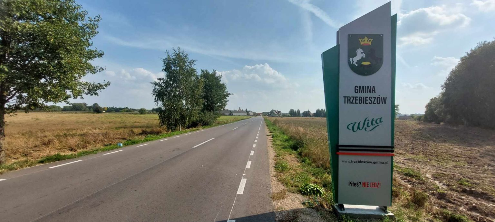
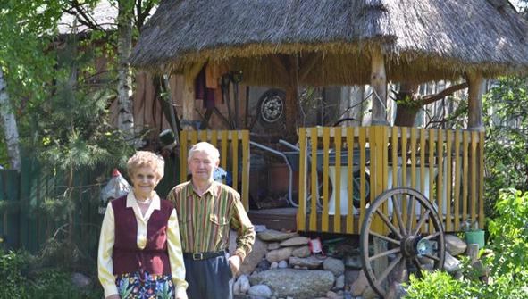

Odkryj uroki Gminy Trzebieszów
Walory przyrodnicze
Gmina położona jest na Równinie Łukowskiej i posiada status ekologiczny. Dominuje tutaj typowo nizinny krajobraz z rozległymi polami i łąkami przeciętymi spokojnym nurtem Krzny Północnej. Rzadkie i zanikające gatunki flory leśnej chroni rezerwat przyrody „Kania" znajdujący się na terenie wsi Szaniawy-Poniaty.
Okoliczne bory słyną z obfitości runa leśnego: jagód, grzybów, borówek oraz innych owoców leśnych. Na południe od Trzebieszowa znajduje się kompleks leśny o powierzchni 1080 ha, wchodzący w skład Radzyńskiego Obszaru Chronionego Krajobrazu.
Szlak Ziemi Łukowskiej
Jednym z największych atutów gminy jest Szlak Ziemi Łukowskiej, który prowadzi przez najciekawsze miejsca regionu.
Skansen w Dębowierzchach
Skansen znajduje się u Państwa Krystyny i Józefa Owczarskich w Dębowierzchach. Małżeństwo posiada w swoich zbiorach narzędzia dawniej wykorzystywane do uprawy roli.
W celu odwiedzin prosimy o wcześniejszy kontakt z Urzędem Gminy Trzebieszów.
Galeria zdjęć
